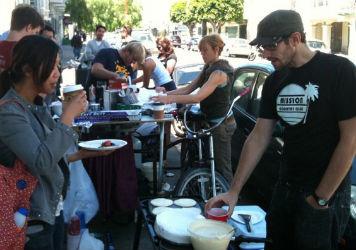

I'd love to work with all of you over at Good Eggs. We should talk!
I'm a developer that's been working with node.js most recently and I'm a huge fan of what you've built so far. In the past, I've done a lot of work around using technology to help small businesses. Most recently I've been developing with Node.js and I think we could build some amazing things together.
I believe there are no best practices, only better practices. I'm never satisfied with good enough, but I know when to draw the line and ship things (usually pretty early). This has allowed me to deliver lots of amazing products and features, making customers happy and then immediately start work on making them even better.
After about 4 years inside larger organizations, I'm craving the excitement that can only be found in early stage companies like yours and I'm looking for a way that I can do more than just write code. I want to have a real impact on how the world works and I think Good Eggs might be one of the few places I could make a positive change in the world.
The other day, I was discussing the different software tools and services that exist for small local food producers with my friend Brian that runs the Magic Curry Kart. The topic turned to online marketplaces where you could showcase your goods and he suggested I check out what you've been building. So, I did and I placed an order the next day. Everything worked perfectly and I was super happy with everything I ordered.
I think you've got the formula right. People are increasingly wanting to know how their food is produced and who is making it. You are one of the only groups that I've seen that makes this distinction and knows that showcasing the producers and their goods is one of the most important things in building a local food marketplace. To me, this is most visible in your producer profiles and how beautifully crafted they are.
You've also built the beginnings of a solid delivery business. As you grow and expand into new markets, that's going to require a lot of really interesting work to make it all operate smoothly and effectively. It sounds like a very interesting challenge to coordinate hundreds of local producers, shipments, pickups and deliveries, especially when freshness is one of the most important things your customers are looking for.
I've also had a bit of a look at the tools you offer the producers, and I'm pretty excited with some of the tools you've already built like direct marketing support as well as possibilities you could offer producers in the future, like more detailed customer analytics that could really change how local food businesses are run.
On top of this, your technology philosophy seems similar to mine. I love that your job posting asks for someone that wants to "grow" a software platform. I've often said that software development is much like gardening in that it's more about maintaining steady growth than big revolutionary changes. It hints that you know sustainability in the code is as important as sustainability in our food system.
I love using technology to help small to medium sized businesses (ideally local ones) to grow. This is part of the reason I joined CityVoter from the beginning and it was a large factor in why I worked with the team building Business Catalyst before (and after) it was acquired by Adobe. Both companies provided small businesses with tools to help them grow and more efficiently run their business.
I've been writing mission critical node.js code for a while now and have node code in production handling millions of requests per day.
I've been part of a very early stage company before, building things from the ground up. I know what it's like to have to work on all aspects of a system and honestly prefer the varied work that early stage companies with small teams have.
I'm no stranger to continuous delivery, TDD and other things that would fall under the software craftsmanship label. I've set up continuous delivery systems and the process to support them at 3 separate companies now.
I built most of the business profile management tools at CityVoter, empowering small local businesses to have more control over their presence on our sites and giving them ways to promote their business.
My food experience was humbling and left me with a much deeper respect for anyone running a food business. What I did was to join a friend of mine Brian who runs the Magic Curry Kart in cooking and selling to random strangers at the intersection of 19th and Linda.
This got started after having Brian over for my yearly Super Pancake Fest. These take place the Friday after Thanksgiving each year and are a bit of a spectacle. I typically make about 5-6 different kinds of pancakes with triple chocolate or poppyseed being the usual favorites and maybe 10 or so toppings with spiced clementines or the home made apple sauce being some of the favorite sauces. Anyway, after this one Super Pancake Fest, a few years ago, Brian invited me out to sell pancakes with him on the street from his cart. I brushed it off at the time, but after a while, we decided to do it for real.
Since this was my first time selling food to strangers, I decided on a simplified menu. I prepared a plain pancake batter the night before and in the morning I prepared a mix of berries, some mint and a touch of sugar. I also brought along some real Vermont maple syrup (I know it's not local, but Vermont is really the only place that should legally be allowed to produce maple syrup) and powdered sugar.
 The day of, we set up outside the Mission Pool on 19th by Linda. I had a small camp stove and griddle and Brian was making and selling breakfast sandwiches featuring his Magic Curry Paste from his "Kart". The setup worked pretty well and we were able to produce a lot of food pretty quickly.
However, what quickly became apparent is that pancakes are not really a mobile food. They're not designed to be eaten on the go. On top of this the only people that seemed to be into the pancakes were families with small children (kinda rare at the intersection we chose near Dolores park). At the end of the day, the breakfast sandwich had outsold the pancakes 4 to 1 or more.
So, what did I learn? While I learned that pancakes are logistically difficult on the street, the main thing I learned was just how difficult it is to be a small food vendor and that the people doing these things need our support. Since then, I've become a lot more conscious of where my food money is going and have tried to make sure it's supporting new and independent producers. I've also tried to support Brian and others like him whenever possible.
On top of all this, I learned that I personally get more enjoyment when I give away food that I make than when I sell it and I think that's why I haven't gone back to do this again. But overall, I'm glad I got to experience what it's like to go out there and sell food on the street and I now know on some level what a lot of the local producers are feeling and dealing with and am maybe just a bit more equipped to help them than I was before.
Thanks for taking the time to read this and find out about me. I'd love to talk to you about working together. You can contact me via email at joe.sadowski@gmail.com. Together, I think we can make an amazing product even better and have a huge impact on the world.
-joe